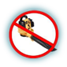
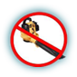
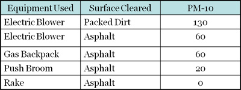
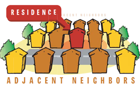

Sebastopol Peaceful Air Effort
Working to restore peace by restricting unnecessary leaf-blower usage
Sign our petition asking the City Council to protect our community from toxic, disruptive, and ecologically destructive leaf blowers.

I support the work of the Sebastopol Peaceful Air Effort and the Sebastopol City Council to create and implement a city ordinance to effectively restrict the use of leaf blowers in order to prevent hazardous air and noise pollution.
Link & Resources
Organizations
Reports
-
Leaf Blower Report,
CA EPA Air Resources Board -
Particulate Matter,
Bay Area Air Quality Management District - Noise: A Health Problem, US EPA
-
Noise Guidelines,
World Health Organization -
Leaf Blower Pollution Hazards,
Orange County Grand Jury
Health Hazards of Leaf Blowers
 
Sebastopol Peaceful Air Effort
The Toxicity of Leaf Blowers
Particulate Matter = Respiratory Illness
Noise = Illness-inducing stress, Discomfort & Hearing Loss
Polluting Emissions = Air Pollution & Global Warming
What Do Leaf Blowers Send Into Sebastopol’s Air at 200 miles an hour?
Particulate Matter, which is comprised of:
- smoke, soot, dust, salt, acids, metals and in landscaped areas,
- fecal matter, pesticides, mold (CA EPA Air Resources Board)
Particulate Matter’s Effects
Aggravates: asthma attacks, bronchitis and other lung diseases
Impairs: immune system (State of California Air Resources Board)
Particulate matter pollution is estimated to cause 22,000-52,000 deaths per year in the United States (Journal of the American Medical Association, 2000)
How Bad Are Leaf Blowers?

Taken from data in
Determination Particulate Emission Rates from Leaf Blowers
College of Engineering-Center for Environmental Research and Technology, UC-Riverside
San Joaquin Valley Unified Air Pollution Control District
Leaf Blowers: A Toxic Gift That Keeps on Giving
About 5 lbs of particulate matter per leaf blower per hour are swept into the air & can drift for days before settling. One resident's leaf blower can affect 8 to 14 neighbors. (Bay Area Air Quality Management District and Zero Air Pollution LA)
Toxic Stress
"Noise causes stress and the body reacts with increased adrenaline, changes in the heart rate, and elevated blood pressure."
"[T]he fetus is not fully protected from its mother's response to stress...this indirect fetal response may threaten fetal development if it occurs early in pregnancy."
(US EPA)
Leaf Blowers & Hearing Loss
- 1 leaf blower = 100+ decibels = a motorcycle or rock concert
- Roughly 25% of all Americans 65+ suffer from hearing loss; contrary to common belief, hearing loss is NOT part of the natural aging process, but is caused by preventable, noise-induced wear and tear on the auditory system Leaf blower noise can cause hearing loss both to workers and passers-by.(Journal of the American Medical Association, 1999)
Polluting Emissions
- In one hour, one leaf blower produces as much smog as 17 cars.
- One half-hour of one leaf-blower’s use is equivalent to one car driving 440 miles.
- 30% of the fuel of inefficient two-stroke leaf blower engine is blown into the air unburned (Orange County Grand Jury Report & CA EPA Air Resources Board)
More than 100 California Cities Ban or Restrict Leaf Blowers
They include: Mill Valley, Tiburon, Berkeley Carmel, Santa Barbara, Sunnyvale Menlo Park, Los Altos, Del Mar, Santa Cruz, Sonoma
"STOP Using Leaf Blowers"
The California EPA Recommends Avoiding Leaf Blowers for Our Health "Avoid using leaf blowers and other dust-producing equipment."
As does the American Lung Association
"Use hand-powered or electric lawn care equipment rather than gasoline-powered."
References
Leaf Blower Report, CA EPA Air Resources Board
http://www.arb.ca.gov/msprog/leafblow/leafblow.htm
Bay Area Air Quality Management District
http://www.baaqmd.gov/Divisions/Planning-and-Research/Particulate-Matter.aspx
Air Pollution from Leaf Blowers
From Leaf Blower Facts by Citizens for a Quieter Sacramentohttp://www.nonoise.org/quietnet/cqs/leafblow.htm
excerpts "Noise: A Health Problem" by US EPA
Determination particulate emission rates from leaf blowers [tables]
http://www.epa.gov/ttn/chief/conference/ei15/session5/fitz.pdf
Noise Guidelines, World Health Organization
http://www.who.int/docstore/peh/noise/Comnoise3.htm
Leaf Blower Pollution Hazards in Orange County
http://www.ocgrandjury.org/pdfs/leafblow.pdf